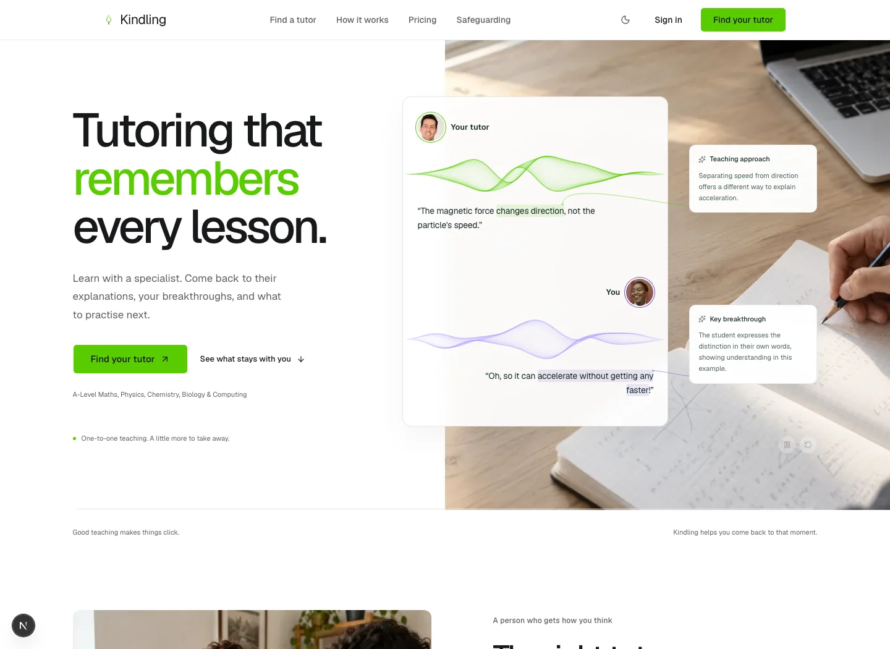

A little more presence. A little more human.
Three photo treatments for the same hero. The full-bleed study scene is active in the application: no fade, no opacity reduction, covering the complete right half on desktop. The portraits are stock photographs illustrating the demo participants.
Recommended: the full-bleed study scene gives the demo a clear photographic setting without competing faces behind the notes.
To switch the application treatment, change HERO_PHOTO_LOOK in src/components/marketing/hero.tsx. To restore the fluid avatar orbs, set USE_PHOTOGRAPHIC_PROFILES to false in lesson-signal.tsx. Photo sources are recorded in marketing-image-sources.md.